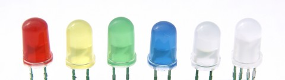
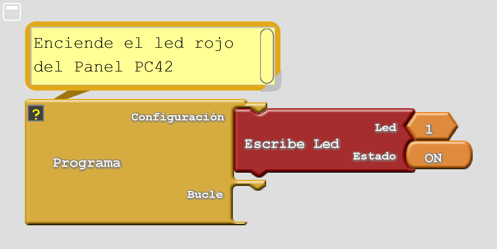

3. Encendido y apagado de los LED¶
{kind=link}
Objetivos¶
Encender y apagar los diodos led del panel de control PC42.
Generar parpadeo de leds mediante esperas de tiempo.
Leds del panel de control PC42¶
El panel de control dispone de 6 leds. 5 led son de un solo color. El último led de la derecha es un led RGB con los tres colores básicos rojo, verde y azul en su interior.
Led
Color
1
ROJO
2
AMARILLO
3
VERDE
4
AZUL
5
BLANCO
6
RGB-ROJO
7
RGB-VERDE
8
RGB-AZUL
El led RGB permite generar colores compuestos por la suma de otros:
Led
Color
6 + 7
RGB-AMARILLO
7 + 8
RGB-CYAN
6 + 8
RGB-MORADO
6 + 7 + 8
RGB-BLANCO
La función ledWrite()¶
-
ledWrite(int ledNum, int bright)¶ Esta función permite encender o apagar un led concreto. Sus parámetros son los siguientes:
ledNum: led que se va a encender o apagar. Los valores válidos van desde 1 para el led D1 hasta 8 para el color azul del led D6.El led D6 es un led RGB, que contiene 3 leds en su interior. Los números 6, 7, 8 representan respectivamente los colores rojo, verde y azul del led D6.
bright: brillo con el que se va a encender el led.LED_OFF: apaga el led. Se puede sustituir por el número cero.LED_ON: enciende el led con la intensidad máxima.
La función digitalWrite()¶
-
digitalWrite(int ledNum, int bright)¶ Esta función es semejante a la función anterior ledWrite. Su funcionamiento es idéntico, acepta dos parámetros
ledNumybrightpara establecer el led que se manejará y su brillo.La función tiene el mismo nombre que la función de Arduino para manejar los pines de salida digital. De esta forma se mantiene la compatibilidad de nombres para aquellos programadores acostumbrados al entorno Arduino.
Ejemplo: encender el led D1¶
El siguiente programa encenderá de forma permanente el led D1 utilizando la función ledWrite
1 2 3 4 5 6 7 8 9 10 11 12 | // Enciende el led D1
#include <Wire.h>
#include <PC42.h>
void setup() {
pc.begin(); // Inicializar el módulo PC42
pc.ledWrite(1, LED_ON); // Encender el led D1
}
void loop() {
}
|
Programa equivalente en el entorno Ardublock:
{kind=link}
En este enlace se puede descargar el archivo de programa
para entorno Ardublock 'ledWrite_On'
Ejemplo: parpadeo del led D1¶
Si se desea encender y apagar el led D1 con un periodo de un segundo,
una forma de realizarlo es encender el led, esperar medio segundo,
apagar el led y esperar medio segundo. Cuando esta secuencia se
repite, el led parpadea.
Para conseguir una espera de medio segundo se utiliza la función
delay(500) que provoca una espera de 500 milisegundos
(0.5 segundos).
Para conseguir que la secuencia se repita indefinidamente, el código
se introduce dentro del bloque loop(), que se repite una y otra
vez dentro del programa de Arduino.
1 2 3 4 5 6 7 8 9 10 11 12 13 14 15 | // Parpadea el led D1 una vez por segundo
#include <Wire.h>
#include <PC42.h>
void setup() {
pc.begin(); // Inicializar el módulo PC42
}
void loop() {
pc.ledWrite(1, LED_ON); // Encender el led D1
delay(500); // Esperar medio segundo (500 ms)
pc.ledWrite(1, LED_OFF); // Apagar el led D1
delay(500); // Esperar medio segundo (500 ms)
}
|
Programa equivalente en el entorno Ardublock:

En este enlace se puede descargar el archivo de programa
para entorno Ardublock 'ledWrite_On_Off'
Ejercicios¶
Programa el código necesario para resolver los siguientes problemas.
Encender los leds D1, D3 y D5 de forma permanente.
Encender el led D1, esperar un segundo, encender el led D2, esperar un segundo, continuar la secuencia hasta que estén encendidos los 4 primeros led. Una vez terminado, el programa mantendrá los 4 leds encendidos.
Encender los leds rojo, ámbar y verde como en un semáforo.
Primero se encenderá el led verde y permanecerá encendido durante 4 segundos. A continuación se apagará el led verde y se encenderá el led ámbar durante 2 segundos. Por último se apagará el led ámbar y se encenderá el rojo, que permanecerá encendido durante 4 segundos.
Esta secuencia se repetirá indefinidamente.
Modificar el ejercicio anterior para que el led ámbar parpadee tres veces, cambiando de encendido a apagado cada medio segundo, antes de pasar a encender el led rojo.
Programar una baliza que encienda alternativamente el led rojo y el led azul. Cada led debe permanecer encendido durante un segundo. Siempre debe estar uno de los dos led encendidos y nunca estarán los dos led encendidos a la vez.
Encender el led D1, esperar un segundo, apagar el led D1 y encender el led D2. Se encenderán de esta forma, consecutivamente, los 5 primeros leds. En cada momento solo un led estará encendido. Una vez terminada la secuencia, comenzará de nuevo desde el principio.
Realizar una modificación al ejercicio anterior para que en todo momento haya 2 leds encendidos.
Al comenzar el programa deben encenderse los leds D1 y D2.
Pasado un segundo se encenderán los leds D2 y D3.
La secuencia continuará hasta que estén encendidos los leds D6 y D1.
A partir de este momento, el programa se repetirá comenzando otra vez desde el principio.
El siguiente programa tiene varios errores. Corrige los errores sintácticos para que funcione correctamente.
1 2 3 4 5 6 7 8 9 10 11 12 13 14 15 16 17 18 19 20 21 22 23 24 25
// Programa con errores sintácticos // Enciende 6 leds en secuencia a derecha y a izquierda #include <Wire.h> #include <PC42.h> void setup() { pc.begin(); // Inicializar el módulo PC42 pc.ledWrite(1, LED_on); } void loop() { for(char i=1; i<=5; i++) { pc.ledWrite(i+1, LED_ON); // Encender el led siguiente delay(250); // Esperar 250 milisegundos pc.ledWrite(i, LED_OFF); // Apagar el led anterior delay(100); // Esperar 100 milisegundos } for(char i=5; i>=1; i--) { pc.ledWrite(i, LED_ON); // Encender el led anterior delay(250); // Esperar 250 milisegundos pc.ledWrite(i+1, LED_OFF); // Apagar el led siguiente delay(100); // Esperar 100 milisegundos }
Realizar un programa que haga parpadear D1 una vez por segundo a la vez que D2 parpadea dos veces por segundo.